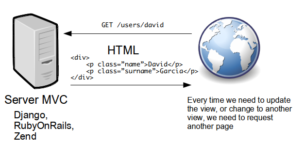
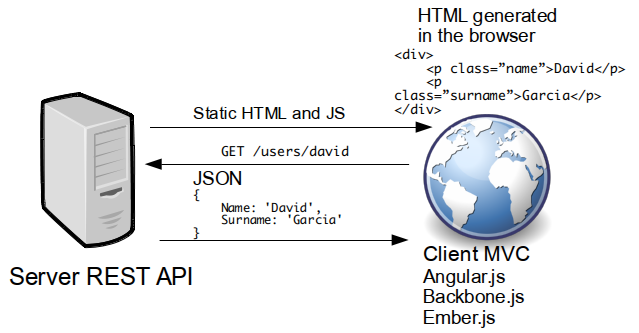

AngularJS
A training course by:
David García / @?? Jimmy Collazos / @?? Juan Jose Martín Rodríguez / @?? Pablo Jiménez / @pjmpjm
Introduction
AngularJS it's an open-source javascript framework, created by Google, that assists with running single-page applications.
Multi-page application
Multi-page web applications create their HTML by assembling and joining it with data on the server, and then shipping the finished pages up to the browser.
Single-page applications
In Single-page applications, HTML is assembled on the browser. The role of the server is just to serve the static resources for the templates and handle the data required by those templates.
MVC in Angular
- Views. Client side templates. HTML + angular directives
- Models. Plain javascript objects {}. (aka scopes)
- Controllers. Javascript functions that change the model (scope)
- Angular.js offers two way data-binding. view <-> model
Other Angular.js features
- Dependency injection. Just ask for your needs, Angular injects your dependencies.
- Directives (inspired in web components)
- HTTP, REST API consumption method
- Application URL routes
- Promises
Starting TID Trello
Clone TID trello boiler plate
git clone http://github.com/empoalp/tidtrello.git
Install dependencies
cd tidtrello
npm install
Run the server
node server.js
Put your code inside app folder
Setting up an angular project
<!DOCTYPE html>
<html lang="en" ng-app="tidtrello">
<head>
<meta charset="UTF-8">
</head>
<body>
<script src="angular.js"></script>
<script>
angular.module('tidtrello', []);
</script>
</body>
</html>
Writting up your first application
<!DOCTYPE html>
<html lang="en" ng-app="tidtrello">
<head>
<meta charset="UTF-8">
</head>
<body>
<div ng-controller='HelloController'>
<p>{{greeting.text}}, World</p>
</div>
<script src="angular.js"></script>
<script>
angular.module('tidtrello', []);
function HelloController($scope) {
$scope.greeting = { text: 'Hello' };
}
</script>
</body>
</html>
TID Trello exercise
Step 1: Make an angular app showing a basic trello card:
- Title
- User name
- Card description
Angular modules
angular.module function is used to create modules and to retrieve existing ones
Create angular module passing name and dependency array
angular.module('tidtrello', []);Passing just the name returns an already created module
angular.module('tidtrello');Creating a controller (the right way)
angular.module('tidtrello').controller('HelloController', function($scope) { $scope.greeting = "Hello"; });
Controllers
A Controller is a JavaScript constructor function that is used to augment the Angular Scope.
The ng-controller directive causes the instantiation of a new Controller object, using the Controller's constructor function
Controllers (II)
Use Controllers to encapsulate the business logic needed for a single view.
- Setting up the initial state of the $scope object.
- Adding behavior to the $scope object.
function GreetingCtrl($scope) {
$scope.username = 'World';
$scope.sayHello = function() {
$scope.greeting = 'Hello ' + $scope.username + '!';
};
}
Controllers (III)
Do not use Controllers for:
- DOM manipulation. Use databinding or encapsulate your own presentation logic in directives
- Input formatting — Use angular form controls instead.
- Output filtering — Use angular filters instead.
- Sharing stateful or stateless code across controllers - Use angular services instead
Expressions
Create hooks between templates, application logic, and data.
- Simple math (+, -, /, *, %)
- Comparisons (==, !=, >, <, >=, ⇐)
- Boolean logic (&&, ||, !) and bitwise operations (\^, &, |)
- Call functions, reference arrays and object notation ([ ], { }, .)
Example:
{{recompute() / 10}}Angular Expressions vs. JS Expressions
- Attribute evaluation: evaluation of all properties are against the scope, not the global 'window'.
- Forgiving: expression evaluation is forgiving to undefined and null. In {{a.b.c}}, if a is undefined, the expression shows nothing.
- No Control Flow Statements.
- Filters: you can pass result of expression evaluations through filter chains.
Filters
Filters allow you to declare how to transform data for display to the user. Syntax:
{{ expression | filterName : parameter1 : ... parameterN }}Example:
{{12.9 | currency}}=> $12.9
TID Trello exercise
Step 2: Use angular filters to modify your TID trello card. http://docs.angularjs.org/api/ng -> Filters
- Title
- User name
- Card description
- Date
Creating your own filters
angular.module('tidtrello')
.filter('myfilter', function() {
var currencySymbol = '$';
return function(input) {
return input + currencySymbol;
};
});
{{ 12 | myfilter }} -> 12$
TID Trello exercise
Step 3: Create your own filter to display user gravatar.
- Gravatar image url is http://www.gravatar.com/avatar/emailmd5
- Use md5-min.js library. hex_md5(string)
Directives
Directives are markers on a DOM element (attribute, element, or CSS class) used to modify its behavior, by adding custom functionality.
We have already use them!:
- ng-app
- ng-controller
AngularJS comes with a large set of directives. Examples:
- ngHide / ngShow
- ngClick
- ngRepeat
TID Trello exercise
Step 4: Use angular directives to show a list of cards. http://docs.angularjs.org/api/ng -> Directives
- Title
- Status
- User name
- Card description
- Date
TID Trello exercise
Step 4b: Highlight selected card when you click on it http://docs.angularjs.org/api/ng -> Directives
Tips:
TID Trello exercise
Step 5: Filter list by status attribute. Use select/radio elements to choose status value. http://docs.angularjs.org/api/ng -> Directives
Tips:
How scopes work
How angular knows that something changed in the model so it needs to update the view?
It uses dirty checking. After the controller is done, it checks what changed in the scope and updates de view

$scope.$apply
Use ($apply) to propagate any model changes through the system into the view from outside of the "Angular realm" (i.e., from browser DOM events, setTimeout, XHR or third party libraries).
$scope.$watch
($watch) to observe model mutations.
$scope.$watch('count', function(newValue, oldValue) {
if (newValue === 0) {
$scope.empty = true;
}
});
Scopes hierarchy
Scopes are arranged in hierarchical structure which mimic the DOM structure of the application.
Hierarchies. An angular app has one root scope, but may have several child scopes. A scope (prototypically) inherits properties from its parent scope.

Scopes events
- Event propagation. Scopes can propagate events in similar fashion to DOM events. The event can be broadcasted to the scope children or emitted to scope parents.
$scope.$emit('itemdeleted', item);
$scope.$broadcast('itemdeleted', item);
$scope.$on('itemdeleted', function(e, item) {
});
Angular.js services
Angular.js offers a lot of Services
- $location: Allows you to manage the URL of the page. Get current URL, change it, get parameters,...
- $http: Allows to perform HTTP requests
- $q: Service to create promises
- $rootScope: To access the root scope of the page
Dependency injection
Service are available in your controllers, filter, directives and other services, using dependency injection.
Angular.js looks for the name of the parameters of your constructor functions and injects the service with the same name
angular.module('tidtrello').controller('MyController',
function($location, $scope) {
});
Dependency injection and minifiers
Javascript minifiers change the name of the variables, so it will break Angular.js dependency injection based on parameter name. There are two possible solutions:
angular.module('tidtrello').controller('MyController',
['$location', '$scope', function($location, $scope) {
}]);
function MyController($location, $scope) {
}
MyController.$inject = ['$location', '$scope'];
angular.module('tidtrello').controller(MyController);
TID Trello exercise
Step 6: Watch 'selectedStatus' model property and change browser's path location with it's value
Tip: Use $location service to handle browser's URL
TID Trello exercise
Step 7: Use $http service to get the cards from the server
Cards endpoint '/cards'
Creating your own directives
Use directive method of your module
angular.module('tidtrello').directive('myDirective',
function() {
return {
restrict: 'AEC',
template: '<p>My directive content</p>',
// templateURL: '/html/mydirective.html',
link: function(scope, element, attrs) {
scope.$watch('width', function(value) {
element.css('width', value);
});
}
};
});
<my-directive></my-directive>
<div my-directive></div>
<div data-my-directive></div>
<div class="my-directive"></div>
TID Trello exercise
Step 8: Create your own directive for the card element